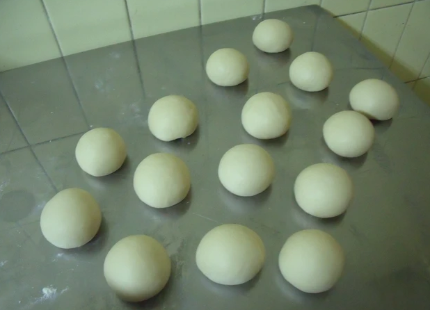
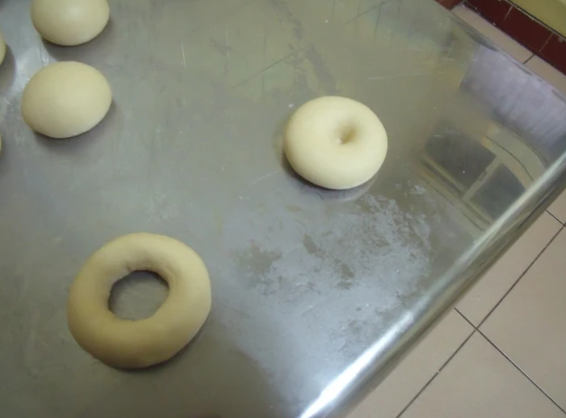
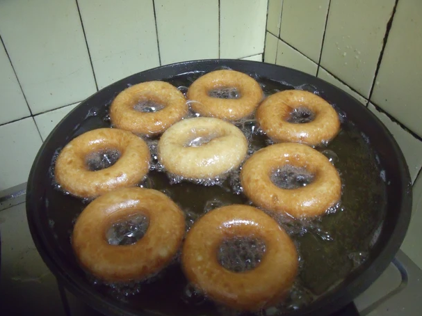

食材&作法
高筋麵粉 500g
酵母 5g
糖 50g
奶油 40g
蛋 1顆
鹽 5g
水 250g
1.將所有材料放入盆中(奶油先放軟),攪拌均勻。
2. 搓揉至不黏手即可,醒30~40分鐘。
3. 分割每個60g的劑子,揉圓揉至光滑,鬆弛20分鐘(我做了15個)。
4. 將揉圓的劑子,壓一下,用手指在中間搓一個洞,用兩手的姆指跟食指均勻的拉開,再鬆弛10分鐘。
5. 油燒熱至140度左右(用筷子插在油中,有很多小泡泡浮起來即可,將火轉至中小火,放入甜甜圈。
6. 不斷的翻面,炸至兩面金黃即可起鍋,再根據自己喜好裹上糖霜或巧克力等就好了。